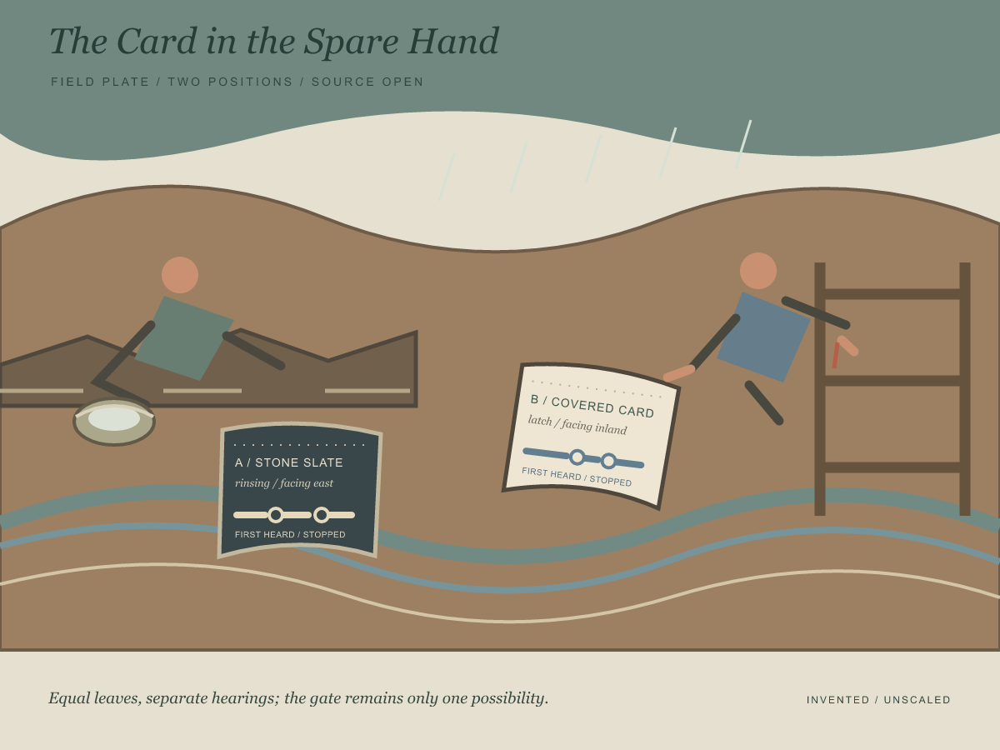

The Card in the Spare Hand
Two listeners estimate the edges of what they hear while doing different work in shared rain. Each keeps a record in reach; no source is assigned.

Reading the marks
Each colored line belongs to one listener. Its two rings mark that person's estimates of first hearing and stopping. The examples are invented, and the lines are not scaled to time; their lengths cannot be compared as durations.
A rests a slate beside the rinsing pan. B holds a covered card while reaching toward the latch. Equal leaf size gives both reports equal physical presence, while each remains attached to a different task and position. The gate is one possible object in the scene, not an identified sound source.